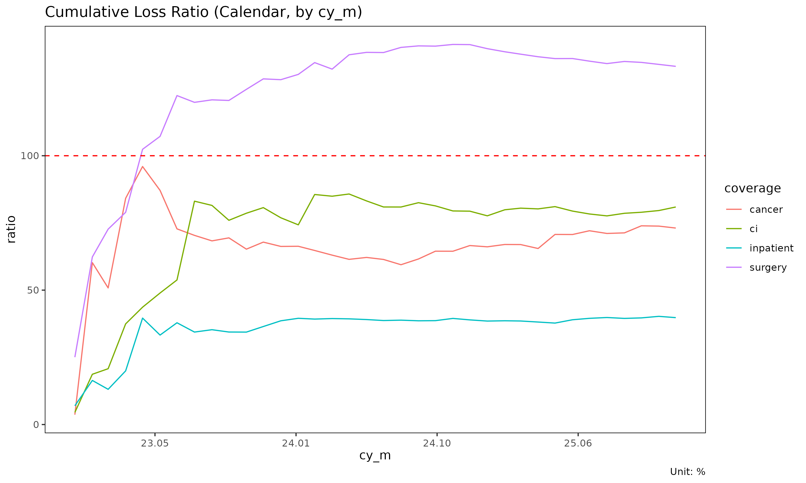

Aggregation frameworks: Triangle, Calendar, Total
Source:vignettes/aggregation-frameworks.Rmd
aggregation-frameworks.RmdThe same long-format experience data can be aggregated three ways
depending on the question being asked. lossratio exposes
one builder per framework. This vignette compares them.
At a glance
| Builder | Output object | Dimension | When to use |
|---|---|---|---|
as_triangle() |
Triangle |
cohort × dev (2D) | SA, ED, CL projection |
as_calendar() |
Calendar |
calendar period (1D) | Calendar-year trend, diagonal effect |
as_total() |
Total |
portfolio total (per group) | High-level loss-ratio comparison |
Conceptually:
-
Trianglepreserves both the cohort axis (when policies were underwritten) and the development axis (how loss accrues over development time). This is the canonical chain-ladder data structure. -
Calendarcollapses cohorts onto the diagonal — each row is one calendar period across all underwriting cohorts. Equivalent to the diagonal sum of the triangle. -
Totalcollapses both dimensions to one value per group. Useful for portfolio-level comparison (which product had the worst loss ratio over the window?).
Triangle (cohort × dev)
library(lossratio)
data(experience)
tri <- as_triangle(
experience,
groups = "coverage",
cohort = "uy_m",
calendar = "cy_m",
loss = "incr_loss",
prem = "incr_prem"
)
head(tri)
#> coverage n_cohorts cohort dev loss incr_loss prem incr_prem
#> <char> <int> <Date> <int> <num> <num> <num> <num>
#> 1: ci 36 2023-01-01 1 1262380 1262380 27993106 27993106
#> 2: ci 35 2023-01-01 2 12518143 11255763 57177037 29183931
#> 3: ci 34 2023-01-01 3 23799452 11281309 86579003 29401966
#> 4: ci 33 2023-01-01 4 57401839 33602387 113149543 26570540
#> 5: ci 32 2023-01-01 5 64554461 7152622 140621429 27471886
#> 6: ci 31 2023-01-01 6 74664986 10110525 167390789 26769360
#> lr incr_lr margin incr_margin profit incr_profit loss_share
#> <num> <num> <num> <num> <fctr> <fctr> <num>
#> 1: 0.0450961 0.0450961 26730726 26730726 pos pos 0.2745858
#> 2: 0.2189365 0.3856836 44658894 17928168 pos pos 0.1681986
#> 3: 0.2748871 0.3836923 62779551 18120657 pos pos 0.2132981
#> 4: 0.5073095 1.2646483 55747704 -7031847 pos neg 0.3016874
#> 5: 0.4590656 0.2603615 76066968 20319264 pos pos 0.2007284
#> 6: 0.4460519 0.3776902 92725803 16658835 pos pos 0.2065480
#> incr_loss_share prem_share incr_prem_share
#> <num> <num> <num>
#> 1: 0.27458581 0.3811712 0.3811712
#> 2: 0.16119409 0.3803460 0.3795578
#> 3: 0.30364017 0.3873522 0.4017435
#> 4: 0.42701715 0.3795353 0.3561180
#> 5: 0.05446224 0.3776462 0.3700598
#> 6: 0.25346879 0.3774003 0.3761137Each row is one (cohort, dev) cell with cumulative loss / risk premium. Visualise as line plot or heatmap:
plot(tri) # one trajectory per cohort, faceted by group
# With multiple group panels each panel's cells get too narrow to read,
# so use quarterly cohort and dev to bring each panel down to ~10 x 10
# cells. This fits the documentation's display size; in practice you
# can keep monthly resolution by enlarging the plot.
tri_q <- as_triangle(experience, groups = "coverage", cohort = "uy_m", calendar = "cy_m", loss = "incr_loss", prem = "incr_prem", grain = "Q")
plot_triangle(tri_q) # cohort × dev heatmap of lr
Use Triangle as input to: - as_link() —
development factors (ATA / ED via target + optional
exposure) - fit_cl(), fit_lr() —
projection - detect_regime() — structural change
detection
Calendar (calendar period only)
tri <- as_triangle(experience, groups = "coverage",
cohort = "uy_m", calendar = "cy_m",
loss = "incr_loss", prem = "incr_prem")
cal <- as_calendar(tri)
head(cal)
#> coverage calendar cal_idx n_cohorts loss incr_loss prem
#> <char> <Date> <int> <int> <num> <num> <num>
#> 1: cancer 2023-01-01 1 1 1327186 1327186 36175141
#> 2: cancer 2023-02-01 2 2 53881242 52554056 89468123
#> 3: cancer 2023-03-01 3 3 86254932 32373690 169732522
#> 4: cancer 2023-04-01 4 4 222577950 136323018 264457245
#> 5: cancer 2023-05-01 5 5 358604651 136026701 373602999
#> 6: cancer 2023-06-01 6 6 439679309 81074658 504742606
#> incr_prem lr incr_lr margin incr_margin profit incr_profit
#> <num> <num> <num> <num> <num> <fctr> <fctr>
#> 1: 36175141 0.03668779 0.03668779 34847955 34847955 pos pos
#> 2: 53292982 0.60223955 0.98613465 35586881 738926 pos pos
#> 3: 80264399 0.50818153 0.40333810 83477590 47890709 pos pos
#> 4: 94724723 0.84164058 1.43914929 41879295 -41598295 pos neg
#> 5: 109145754 0.95985485 1.24628486 14998348 -26880947 pos neg
#> 6: 131139607 0.87109609 0.61823167 65063297 50064949 pos pos
#> loss_share incr_loss_share prem_share incr_prem_share
#> <num> <num> <num> <num>
#> 1: 0.2886821 0.2886821 0.4925828 0.4925828
#> 2: 0.6063314 0.6236615 0.4520297 0.4281056
#> 3: 0.4890990 0.3700256 0.4162566 0.3825138
#> 4: 0.5008249 0.5085391 0.3892024 0.3486040
#> 5: 0.4596116 0.4050687 0.3778725 0.3529756
#> 6: 0.3994334 0.2529446 0.3557249 0.3048260Each row is one calendar period (per group). The t
column is a sequential index (1, 2, 3, …) within group — time-series
convention. It is not a development period
(cym - uym); for that you want the Triangle
dev axis.
Calendar aggregation is mathematically the diagonal
sum of the triangle: cells with the same cy_m
(regardless of uy_m/dev_m) are combined.
Use cases: - Trend analysis (“loss ratio is rising over calendar time”) - Calendar-year effect detection (e.g., regulatory shock, premium on-leveling event) - Portfolio monitoring dashboards
plot(cal) # x axis: calendar (Date)
Total (portfolio summary)
# Filter the triangle first (or the raw experience) for a date-bounded
# summary, then collapse to portfolio totals.
tri_bounded <- as_triangle(
experience[uy_m >= as.Date("2023-04-01") &
uy_m <= as.Date("2024-03-01")],
groups = "coverage", cohort = "uy_m",
dev = "dev_m",
loss = "incr_loss", prem = "incr_prem"
)
tot <- as_total(tri_bounded)
head(tot)
#> coverage n_cohorts sales_start sales_end loss prem lr
#> <char> <int> <Date> <Date> <num> <num> <num>
#> 1: ci 12 2023-04-01 2024-03-01 8240143118 9760853703 0.8442031
#> 2: cancer 12 2023-04-01 2024-03-01 2801401212 3710915725 0.7549083
#> 3: inpatient 12 2023-04-01 2024-03-01 158760703 377104088 0.4209997
#> 4: surgery 12 2023-04-01 2024-03-01 13425719536 9003134239 1.4912273
#> loss_share prem_share
#> <num> <num>
#> 1: 0.334611179 0.42713331
#> 2: 0.113757753 0.16238905
#> 3: 0.006446867 0.01650201
#> 4: 0.545184201 0.39397563One row per group, summarising loss / risk premium / loss ratio over
the window. The period_from / period_to
arguments restrict to a fixed window so groups are comparable.
Use cases: - Compare overall loss ratio across coverages - Rank groups by reserve / share of portfolio - Build executive summary tables
Aggregation as data flow
experience (long, with demographics)
│
┌────────────────────┼─────────────────────┐
│ │ │
as_triangle as_calendar as_total
(cohort × dev) (calendar series) (portfolio total)
│ │ │
▼ ▼ ▼
Triangle Calendar Total
(2D, projection) (1D, trend) (0D, comparison)All three start from the same experience and aggregate
demographic dimensions away. Choose the framework based on the
analytical question.
Attribute schema
After aggregation, each object stores its source-column metadata as attributes (used for plot labels and granularity-aware date formatting):
attr(tri, "cohort") # "uy_m"
#> [1] "uy_m"
attr(tri, "dev") # "dev_m"
#> [1] "dev_m"
attr(tri, "grain") # "M"
#> [1] "M"
attr(cal, "calendar") # "cy_m"
#> [1] "cy_m"
attr(cal, "grain") # "M"
#> [1] "M"Granularity ("month" / "quarter" /
"semi-annual" / "annual") is derived on demand
from the raw column name via
lossratio:::.get_period_type(), so no _type
cache attributes are stored.
The data columns themselves are standardised to cohort /
dev / calendar, so downstream code is
granularity-agnostic.